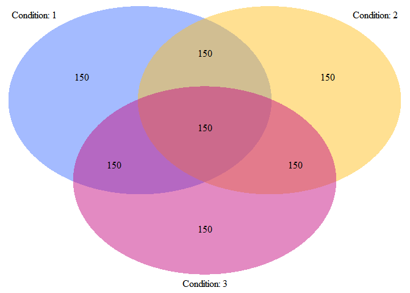

Hierarchical variable selection for models stratified on binary factors
Install using the devtools package:
devtools::install_github("jaredhuling/vennLasso")or by cloning and building.
Load the vennLasso package:
library(vennLasso)Access help file for the main fitting function vennLasso() by running:
Help file for cross validation function cv.vennLasso() can be accessed by running:
Simulate heterogeneous data:
set.seed(100)
dat.sim <- genHierSparseData(ncats = 3, # number of stratifying factors
nvars = 25, # number of variables
nobs = 150, # number of observations per strata
nobs.test = 10000,
hier.sparsity.param = 0.5,
prop.zero.vars = 0.75, # proportion of variables
# zero for all strata
snr = 0.5, # signal-to-noise ratio
family = "gaussian")
# design matrices
x <- dat.sim$x
x.test <- dat.sim$x.test
# response vectors
y <- dat.sim$y
y.test <- dat.sim$y.test
# binary stratifying factors
grp <- dat.sim$group.ind
grp.test <- dat.sim$group.ind.testInspect the populations for each strata:
plotVenn(grp)
Fit vennLasso model with tuning parameter selected with 5-fold cross validation:
fit.adapt <- cv.vennLasso(x, y,
grp,
adaptive.lasso = TRUE,
nlambda = 50,
family = "gaussian",
standardize = FALSE,
intercept = TRUE,
nfolds = 5)Plot selected variables for each strata (not run):
library(igraph)##
## Attaching package: 'igraph'## The following objects are masked from 'package:stats':
##
## decompose, spectrum## The following object is masked from 'package:base':
##
## unionplotSelections(fit.adapt)Predict response for test data:
preds.vl <- predict(fit.adapt, x.test, grp.test, s = "lambda.min",
type = 'response')Evaluate mean squared error:
mean((y.test - preds.vl) ^ 2)## [1] 0.6852124mean((y.test - mean(y.test)) ^ 2)## [1] 1.011026Compare with naive model with all interactions between covariates and stratifying binary factors:
df.x <- data.frame(y = y, x = x, grp = grp)
df.x.test <- data.frame(x = x.test, grp = grp.test)
# create formula for interactions between factors and covariates
form <- paste("y ~ (", paste(paste0("x.", 1:ncol(x)), collapse = "+"), ")*(grp.1*grp.2*grp.3)" )Fit linear model and generate predictions for test set:
lmf <- lm(as.formula(form), data = df.x)
preds.lm <- predict(lmf, df.x.test)Evaluate mean squared error:
mean((y.test - preds.lm) ^ 2)## [1] 0.8056107mean((y.test - preds.vl) ^ 2)## [1] 0.6852124